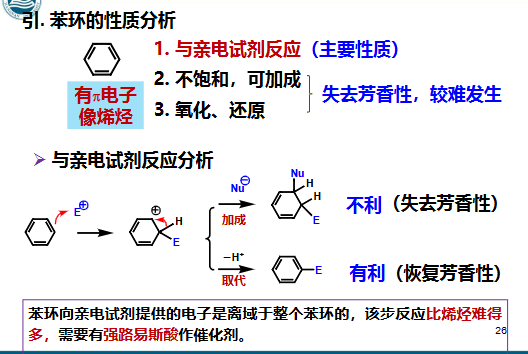
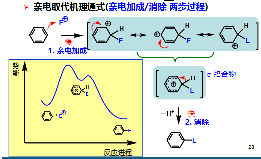
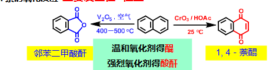

第四章 芳烃和芳香性
章节概览
- 4.1 芳香性的定义、芳香六隅体与苯结构的发现
- 4.2 芳香化合物的分类（苯系、杂环、离子型、非苯系）
- 4.3 芳烃的命名规则（单取代、多取代、稠环、联苯）
- 4.4 苯的结构与共振能（Kekulé 结构、离域大 π 键、氢化热）
- 4.5 芳烃的化学性质（亲电取代、还原、加成、氧化、侧链取代）
- 4.6 取代基对亲电取代的影响（定位规律与电子效应解释）
- 4.7 稠环芳烃（萘、蒽、菲）的化学性质与定位
- 4.8 Hückel 规则与芳香性判断（轮烯、离子型、杂环）
学习目标（重点）
- 理解芳香性的定义、芳香六隅体概念及苯环电子结构
- 掌握芳烃的系统命名规则（包括稠环芳烃编号与联苯编号）
- 掌握苯结构的 Kekulé 表达、共振能与氢化热的定量关系
- 掌握芳烃亲电取代反应机理及五大反应类型（卤代/硝化/磺化/烷基化/酰基化）
- 理解取代基的定位效应（邻对位定位基与间位定位基）及其电子效应解释
- 掌握傅-克反应的机理、限制与碳正离子重排
- 掌握稠环芳烃（萘、蒽、菲）的化学性质、α/β 位选择性及定位规律
- 理解 Hückel 规则 () 并能判别各类化合物（轮烯、离子、杂环）的芳香性
一、芳香性
参考资料：有机化学4 芳烃-1.pdf | 有机化学4 芳烃-2.pdf | 有机化学4 芳烃-3.pdf
1.1 定义
核心概念
芳香性 (Aromaticity)：环状闭合共轭体系， 电子高度离域，具有离域能，体系能量低，较稳定；在化学性质上表现为易进行亲电取代反应，不易进行加成反应和氧化反应。
芳香性的三重含义
- 结构特征：环状、平面、闭合共轭、 电子离域
- 能量特征：体系能量显著低于相应开链共轭多烯，存在共振能（离域能）
- 反应特征：倾向于保留芳香环骨架的取代反应，而非破坏共轭体系的加成/氧化
1.2 芳香六隅体
苯环的 是离域的大 键，体系稳定，能量低，不易开环，不易发生加成、氧化反应。
结构特点
苯环 6 个碳原子各提供一个 p 轨道，侧面重叠形成 6 电子离域 体系，称为芳香六隅体 (aromatic sextet)。6 个 电子完全离域于 6 个碳原子之间，使每个 C—C 键键长均一（约 139 pm），介于单键（154 pm）与双键（134 pm）之间。
1.3 苯的发现与分子式确定
历史脉络
- 1825 年：M. Faraday（法拉第）从压缩煤气冷凝液中首次分离得到苯，测得实验式 CH。
- 1833 年：E. Mitscherlich（米切利希）由苯甲酸（安息香酸）与碱石灰干馏得到苯，确定其分子式为 ，并命名为 benzene。
- 苯的 不饱和度高达 4，但化学性质异常稳定——这是提出芳香性的实验基础。
苯的不饱和度悖论（重要线索）
的不饱和度为 4，按烯烃/炔烃常识应易发生加成与氧化。但实验表明：
- 苯不使 褪色（不发生加成）
- 苯不被 氧化
- 苯与 需在 催化下才发生取代，生成
这种”高度不饱和却异常稳定”的现象，正是芳香性的外在表现，也促使 Kekulé 提出环状结构。
二、芳香化合物分类
| 类别 | 定义 | 示例 |
|---|---|---|
| 苯系（六元环） | 以苯环为基础的芳香化合物 | 、甲苯、萘、蒽 |
| 杂环化合物 | 环中含有杂原子（、、 等） | 呋喃、吡咯、吡啶 |
| 离子型 | 带电荷的芳香体系 | 环戊二烯负离子、环庚三烯正离子 |
| 非苯系（多元环） | 非六元环的芳香体系 | 环戊二烯负离子、薁 (azulene)、轮烯 |
判别思路
判断一个化合物是否属于芳香化合物，不能只看”有没有苯环”，而要用 Hückel 规则（见第七节）判别其 电子数、平面性与闭合共轭。例如 [18] 轮烯无苯环却具有芳香性，而 [8] 轮烯虽有闭合共轭却因非平面而无芳香性。
三、命名规则 命名
3.1 位置关系
| 术语 | 位置 | 英文 |
|---|---|---|
| 邻位 | 1,2-位 | ortho (o) |
| 间位 | 1,3-位 | meta (m) |
| 对位 | 1,4-位 | para (p) |
详细说明参见 苯环位置关系
位置关系的使用
二取代苯可用 o-/m-/p- 加英文俗名表示，如 o-dimethylbenzene（邻二甲苯）、m-dimethylbenzene（间二甲苯）、p-dimethylbenzene（对二甲苯）。系统命名中则用 1,2- / 1,3- / 1,4- 表示。
3.2 母体选择
母体选择规则
- 取代基是烷基、卤素、硝基等时，以苯为母体（如甲苯、氯苯、硝基苯）
- 取代基是氨基、醛基、羧基、酰胺基、羟基等官能团时，则以这些官能团作为母体（如苯胺、苯甲醛、苯甲酸、苯酚）
- 当侧链较复杂或为不饱和基团时，把苯环作为取代基（如苯乙烯 styrene、苯乙炔）
3.3 常见苯基取代基
| 名称 | 符号 | 结构 |
|---|---|---|
| 苯基 | -Ph | |
| 苯甲基/苄基 | -Bn |
苯基与苄基的区分（易错）
- 苯基 (phenyl, Ph-)：苯环直接去掉一个 H 形成的取代基，。
- 苄基 (benzyl, Bn-)：甲苯侧链甲基上去掉一个 H 形成的取代基，。
- 二者活性差异巨大：苄位的 C—H 键能低，易发生自由基取代；苯基则作为芳环取代基。
3.4 官能团优先次序
注意
只能作取代基。
优先次序最前者作为母体并定为 1 号位，其余取代基按”最低位次组”原则编号。例如 中以甲基所在碳为 1 号（甲苯为母体）。
3.5 编号规则
先使母体为 1，然后取代基按照顺序位次最低编号，再按照首字母写名字，和脂肪烃命名规则一致。
多取代基位次组合应使位次组最小（逐位比较），如 1,2,4- 优先于 1,3,4-。
3.6 三个相同取代基的命名
| 名称 | 位置 |
|---|---|
| 连 | 1,2,3- |
| 偏 | 1,2,4- |
| 均 | 1,3,5- |
3.7 稠环芳烃编号
(1) 萘

上面 ，两边
萘的 α 位与 β 位
萘环有 8 个可被取代的 H：1,4,5,8-位为 位（与共用碳相邻），2,3,6,7-位为 位。 位电子云密度较高、反应活性大； 位空间位阻小、产物更稳定。
(2) 蒽

中间 ，两边上面 ，两边旁边
蒽的 9,10 位活泼
蒽的 9 位、10 位（即中间环的 位）电子云密度最高、键长最大，反应主要发生于 9,10 位。菲亦是 9,10 位活泼。这是因为反应后使中间环恢复芳香性，保留两个完整苯环，能量上有利。
3.8 联苯编号
一个苯环是 1~6，另一个就是 1’~6’，以此类推。

联苯 (biphenyl) 命名
两个苯环以单键相连。编号时一个环用 1~6，另一个环用 1’~6’（撇号 prime）。连接键两端的碳均为 1 位和 1’ 位。例：-二氯联苯。
四、苯的结构与共振能
4.1 Kekulé 结构
Kekulé 假说（1865）
Kekulé（凯库勒）提出苯为单双键交替的六元环结构，即两个等价的共振结构式：
Kekulé 结构的局限
- 无法解释苯的 C—C 键长均一（实测 139 pm，非交替的 154/134 pm）
- 无法解释苯的不饱和度高却不发生加成
- 无法解释邻位二取代苯只有一种（按 Kekulé 应有两种：单键相连 / 双键相连）
4.2 现代价键理论解释
苯的结构本质
- 苯的 6 个碳均为 杂化
- 每个 C 形成两个 C—C 键和一个 C—H 键，6 个 C 与 6 个 H 共平面
- 每个碳剩余一个未杂化的 p 轨道（垂直于环平面），相互侧面重叠形成闭合的大 键
- 电子在 6 个碳间完全离域，电子云在环上下方均匀分布
4.3 共振能与氢化热
共振能 (Resonance Energy) 的定量证明
通过氢化热实验可定量证明苯的额外稳定性：
- 环己烯氢化：，
- 若苯为”环己三烯”假想结构，理论氢化热应为
- 苯实际氢化热仅
- 差值：（PDF 取 ）
这 左右的能量即为共振能（离域能），是苯较”环己三烯”额外稳定的能量。
共振能的理解
共振能越大，芳香体系越稳定。这一数值定量解释了苯”不易加成、不易氧化”的原因——加成或氧化会破坏离域大 键，损失共振能，能量上不利；而亲电取代保留芳香环骨架，损失可控。
五、化学性质分析

苯环反应总览
苯环的化学反应以保留芳香 体系为原则：
- 亲电取代（最主要）：保留 ，最常见
- 加成 / 还原 / 氧化：需破坏 体系，条件苛刻，发生少
- 侧链反应：发生在取代基上，与苯环互不影响
六、反应
6.1 亲电取代 取代
(1) 反应机理

机理要点
- 亲电试剂 进攻苯环，形成 -络合物（碳正离子中间体，又称 Wheland 中间体）
- -络合物失去质子，恢复芳香性
- 决速步是 -络合物的形成
机理细节
- 第一步： 与苯环 电子结合，生成 杂化的环上碳，正电荷通过共轭分散于其余 5 个碳（共振稳定）
- 第二步：碱（、 等）夺取该碳上的 H，电子对回到环中重建
- 因 -络合物失去了芳香性（仅剩 4 个 电子离域），能量高、生成慢，故为决速步
- 这一步也是定位规律的根源：取代基通过影响 -络合物的稳定性来决定反应速率与位置
(2) 常见反应
| 反应类型 | 反应式 | 条件 | 特点 |
|---|---|---|---|
| 卤化 | 催化剂 Fe 或 FeX₃ | X=Br,Cl；催化剂也可用 Al 代替；引入 F,I 见重氮盐法 胺及杂环化合物 | |
| 硝化 | 浓硝酸+浓硫酸，加热 | 硫酸作用：除水+催化硝酸产生 ；Ph 上有 EDG 且提高温度则上更多硝基（如制取 TNT）控温 | |
| 磺化 | 浓硫酸或发烟硫酸 | 发烟硫酸可不加热；E 为 ；磺化可水解，用于占位 控温 | |
| Friedel-Crafts 烷基化 人名反应 | Lewis 酸催化 | AlCl₃可换为 SnCl₄, FeCl₃, ZnCl₂, TiCl₄, BF₃；机理：Lewis 酸夺 RX 的 X，生成 ，碳正离子重排后进攻苯环 | |
| Friedel-Crafts 酰基化 人名反应 | Lewis 酸催化 | 酰氯需 >1equiv. AlCl₃；酸酐需 >2equiv. AlCl₃；Ph 连 EWG 不反应 | |
| Blanc 反应 人名反应 | ZnCl₂ 催化 | 本质类似 F-C 反应 控pH反应 |
卤化的特殊条件
如果条件是 ，则卤原子上到 Ph-R 的 R 上，走自由基机理。
卤化机理详解
催化剂可用 Fe（实为 Fe 先与 反应生成 起作用）或 、。Lewis 酸极化 产生有效亲电试剂 （或极化的 配合物）。氟太活泼不宜直接亲电取代（引起加成/破坏），碘亲电性弱且 是还原剂使反应可逆，故 F、I 通过重氮盐法引入。
硝化机理
混酸中浓硫酸使硝酸质子化并脱水，生成真正的亲电试剂硝錄离子 ： 进攻苯环生成 -络合物，再脱去质子恢复芳香性。
磺化机理
亲电试剂为 （或 ）。 中 S 带部分正电荷，进攻苯环。磺化反应可逆，因此可在有机合成中作”占位基”——先磺化占据某位置，进行其他反应后水解脱去磺酸基。
{kind=link}
F-C 烷基化机理
- Lewis 酸夺取 的 X：
- 可能发生碳正离子重排（如正丙基→异丙基），故常得到支链化产物
- 进攻苯环生成 -络合物，脱质子得
- 产物 中 R 为 EDG，使苯环更活泼，易发生多烷基化
F-C 反应的扩展
用烯烃和醇在质子酸环境下也可生成碳正离子：
F-C 反应的限制（重要）
如果 Ph 上连着强 EWG 或碱性基团，则不能发生 F-C 反应。
- 强 EWG： 等使苯环钝化到无法被 进攻
- 碱性基团： 会与 Lewis 酸 配位，既消耗催化剂又使 N 带正电变为强 EWG
- 碳正离子重排：烷基化常得到重排产物，欲得直链烷基苯须用酰基化-还原法
- 多烷基化：难以控制单取代，需苯过量
F-C 酰基化机理
酰基正离子 进攻苯环。酰基化不发生重排（酰基正离子稳定），且产物 中 COR 为 EWG 钝化苯环，故不发生多酰基化。但因产物酮与 配位，需 >1 equiv. AlCl₃；酸酐需 >2 equiv.。
{kind=link}
烷基化 vs 酰基化对比
| 项目 | 烷基化 | 酰基化 |
|---|---|---|
| 亲电试剂 | ||
| 重排 | 常发生 | 不发生 |
| 多次反应 | 易多烷基化 | 不多次（产物钝化） |
| 苯环需活化 | 需活化 | 需活化 |
| AlCl₃用量 | 催化量 | >1 equiv.（酰氯）/>2 equiv.（酸酐） |
6.2 还原反应 还原
苯催化加热加氢得环己烷 控温
Birch 还原（部分还原）
用碱金属（Na/Li）液氨/醇溶液可将苯部分还原为 1,4-环己二烯， 体系保留双键： 这是溶解金属还原（电子转移机理），与催化氢化的完全加氢不同。取代苯的 Birch 还原中，EDG 使取代碳不被还原（保留在双键上），EWG 使取代碳被还原。
6.3 加成反应 加成
生成六氯环己烷（666 制剂）。
苯的加成需苛刻条件
苯环加成会损失共振能（约 ），故需光照/高温等剧烈条件，且为自由基加成而非亲电加成。产物六六六（BHC）曾作杀虫剂，因残留与毒性现已禁用。
6.4 氧化反应 氧化
| 反应类型 | 反应式 | 条件 | 产物 |
|---|---|---|---|
| 苯环氧化 | 催化，高温 | 顺丁烯二酸酐 | |
| 侧链氧化 | 苯甲酸 |
侧链氧化要点
- 无论侧链多长，只要有 -H，均被氧化为羧基
- 无 -H 的侧链（如叔丁基）不发生氧化
- 此反应可用于鉴别侧链有无 -H，以及制备芳香羧酸
苯环氧化产物结构见屏幕截图 2026-06-07 143806.png
{kind=link}
6.5 侧链取代 取代
| 反应类型 | 反应式 | 条件 |
|---|---|---|
| 直接卤素取代 | 光照 | |
| NBS 取代 | 过氧化物 |
NBS 取代特点
有过氧化物，走自由基机理，Br 上在苄位（Bn 位），因为苄基自由基稳定性高。
苄基自由基的未成对电子可与苯环 体系共轭离域（共振到 o/p 位），故苯甲基 C—H 键能低、易断裂，使苄位成为自由基反应的高活性位点。
苯环 vs 侧链卤代的区分（易错）
- 苯环亲电卤代：，Cl 上苯环
- 侧链自由基卤代：，Cl 上侧链（苄位）
- 二者条件不同，机理不同，产物不同，是常考点
6.6 取代基影响
(1) 活性分类
| 类型 | 定义 | 示例 |
|---|---|---|
| 活化基团 (EDG) | 使苯环亲电取代活性增强，速率大于苯 | -OH, -OR, -NH₂, -NHR, -NR₂, -R |
| 钝化基团 (EWG) | 使苯环亲电取代活性减弱，速率小于苯 | -NO₂, -SO₃H, -COOH, -CHO, -COR, -CN, -X |
(2) 定位规律 立体选择性
| 类型 | 定义 | 示例 |
|---|---|---|
| 第一类定位基（邻对位） | 新取代基主要进入邻位和对位 | -OH, -OR, -NH₂, -R, -X |
| 第二类定位基（间位） | 新取代基主要进入间位 | -NO₂, -SO₃H, -COOH, -CHO, -COR, -CN |
一般规律
- 活化基团一般是 EDG/带负电，且邻对位定位
- 钝化基团一般是 EWG/带正电，且间位定位（卤素除外，卤素是钝化但邻对位定位）
定位规律图示见屏幕截图 2026-06-07 145158.png
{kind=link}
定位基强弱次序表（常考）
| 强弱 | 定向 | 基团 |
|---|---|---|
| 强致活 | o/p | |
| 中等致活 | o/p | |
| 弱致活 | o/p | （烷基超共轭/+I） |
| 弱致钝（特殊） | o/p | （-I > +C，钝化但 o/p 定位） |
| 中等致钝 | m | |
| 强致钝 | m |
卤素的特殊性（重点易错）
卤素是钝化基团（-I 诱导效应强于 +C 共轭效应，净结果是吸电子，使苯环电子云密度降低，反应变慢），但它是邻对位定位基（+C 共轭效应使 o/p 位的 -络合物中间体可被共振稳定）。即”钝化但 o/p 定位“，是定位规律中的特例。
(3) 解释
诱导效应和共轭效应共同作用，影响中间体 σ-络合物的稳定性 术语。
定位规律的电子效应解释
定位规律的根源是取代基对 -络合物（Wheland 中间体）稳定性的影响。-络合物的正电荷可分散到原取代基所在的 o/p 位（共振结构）。
- 邻对位定位基（EDG）：通过 +C/+I 给电子，当 进攻 o/p 位时，正电荷可分散到与 EDG 相连的碳上，被 EDG 稳定（共振结构中正电荷在给电子基邻碳）。故 o/p 中间体更稳定，反应快。
- 间位定位基（EWG）：通过 -C/-I 吸电子。当 进攻 o/p 位时，正电荷同样要分散到与 EWG 相连的碳上，但 EWG 吸电子使”正电荷紧邻吸电子基”的共振结构极不稳定；而进攻 m 位时，正电荷不会分散到与 EWG 相连的碳，中间体相对稳定。故 m 位有利。
- 卤素：-I（吸电子，钝化）与 +C（给电子共轭）并存。进攻 o/p 时 +C 可稳定中间体（故 o/p 定位），但总体 -I > +C 使苯环电子密度降低（故钝化）。
(4) 双取代基的定位
定位规则
- 两个定位位置一致 → 在同一位置
- 两个定位位置不一致 → 服从能力强的
- 两个不同类型的定位基 → 服从邻对位定位基
- 考虑位阻影响 → 邻对位如果邻位位阻大则上对位 立体选择性
双取代定位示例
- 对甲基苯酚（-OH 与 -CH₃ 均为 o/p，且方向一致）：新基进入两基之间的 2 位
- 间硝基甲苯（-NO₂ 间位，-CH₃ 邻对位，矛盾）：服从 -CH₃（o/p 基），但因 -NO₂ 的 2 位有位阻/不利的间位定向，主要进入 -CH₃ 的邻位（即 -NO₃ 的 4 位）
七、稠环芳烃
稠环芳烃总论
稠环芳烃由两个或多个苯环共用相邻两个碳（边）稠合而成。重要成员：萘（两环）、蒽/菲（三环直线/角式）。它们的共振能不等同于多个独立苯环之和——稠合使部分键的离域降低，故反应活性高于苯，但仍保留芳香性。
7.1 萘的亲电取代位置
决定因素
- 电子效应：进攻 位（电子云密度高）
- 空间效应：进攻 位 术语
| 反应类型 | 进攻位置 | 条件 |
|---|---|---|
| 卤化 | 位 | - |
| 硝化 | 位 | - |
| 磺化 | 位（低温）/ 位（高温） | 低温动力学控制，高温热力学控制 控温 |
| F-C 酰基化 | 位（低温非极性溶剂）/ 位（高温极性溶剂） | 同上 |
α 位动力学控制 / β 位热力学控制
- 低温：反应由速率决定（动力学控制）。 位电子云密度高，-络合物形成快，得 取代物。
- 高温：反应由产物稳定性决定（热力学控制）。 取代物无 1,8-位空间位阻，更稳定，得 取代物。
- 萘的磺化是动力学/热力学控制的经典实例。
7.2 萘的氧化反应 氧化

| 取代情况 | 氧化结果 |
|---|---|
| 有 -R 取代 | 萘环比 -R 容易被氧化 |
| 有 EDG 取代 | 被取代的环被氧化 |
| 有 EWG 取代 | 另一个环被氧化 |
氧化产物为二羧酸，见屏幕截图 2026-06-07 150751.png
{kind=link}
萘氧化的电子效应解释
氧化过程中，电子云密度高的环更容易被氧化破坏（提供电子给氧化剂）。EDG 使所在环电子云密度升高而被氧化；EWG 使所在环电子云密度降低，从而另一环被氧化。控制条件（如 、）可得到萘醌或邻苯二甲酸酐。
7.3 萘的还原反应

萘的加氢选择性
- 高压催化可得十氢萘（完全加氢）
- （Birch 型）或控制条件可得 1,4-二氢萘或 1,2,3,4-四氢萘
- 萘比苯更易加氢/还原，因为萘的”芳香性”较苯弱（共振能 ，小于 ）
7.4 定位规律 立体选择性
| 取代基类型 | 进攻位置 |
|---|---|
| 萘有邻对位定位基 | 进攻同环 位，且为邻对位（原来 位→同环 p- 位；原来 位→同环 o- 位） |
| 萘有间位定位基 | 进攻异环 位 |
| 蒽 | 一般在 9/10 位 |
7.5 蒽的 Diels-Alder 反应 人名反应
蒽的中间环的共轭双键可以视作能发生 Diels-Alder 反应。
蒽的 9,10 位反应性
蒽（及菲）在 9,10 位发生加成反应（如 、Diels-Alder）后，中间环的双键被消耗，但两个外环仍保留完整苯环芳香性。这种”以一个环的芳香性换取两个完整苯环”在能量上极为有利，故蒽/菲的 9,10 位异常活泼，可发生加成（而非取代）。这是稠环芳烃与苯的本质区别。
蒽的 Diels-Alder
中间环作为二烯与亲双烯体加成，反应在 9,10 位进行。
八、Hückel 规则
核心内容
Hückel 规则：判断单环化合物是否具有芳香性的规则。
含有 () 个 电子的单环的、平面的、封闭共轭多烯具有芳香性。

三大判据（缺一不可）
- 单环共轭：闭合的环状共轭体系（无 碳中断共轭）
- 平面性：所有参与共轭的原子共平面（保证 p 轨道有效重叠）
- 电子数：满足 （即 2, 6, 10, 14, 18…）
应用要点
- 环上的负离子，视作两个 电子
- 杂环化合物（如呋喃、吡咯、吡啶）都有芳香性
8.1 轮烯 (Annulenes) 的芳香性
轮烯实例判别
| 轮烯 | 电子数 | 平面性 | 芳香性 |
|---|---|---|---|
| [4] 轮烯（环丁二烯） | 4（, ） | 平面 | 无（反芳香性，极不稳定） |
| [6] 轮烯（苯） | 6（） | 平面 | 有 |
| [8] 轮烯（环辛四烯） | 8（） | 非平面（盆形） | 无（非芳香性） |
| [10] 轮烯 | 10（） | 非平面（角张力/H 相斥） | 无 |
| [14] 轮烯 | 14（） | 平面 | 有 |
| [18] 轮烯 | 18（） | 平面 | 有 |
| [22] 轮烯 | 22（） | 平面 | 有 |
关键结论
- 电子：反芳香性（若平面）或非芳香性（若非平面）
- 电子：须同时满足平面才显芳香性
- [8] 轮烯：虽闭合共轭但有 8 个 电子，且采取非平面盆形构象规避反芳香性，故非芳香性
- [10] 轮烯：虽 但因环内 H 相斥难以共平面，故无芳香性
8.2 离子型芳香体系
离子型实例
| 化合物 | 电子数 | 计算 | 芳香性 |
|---|---|---|---|
| 环戊二烯负离子 | 6 | （双键）（负电荷） | 有 |
| 环庚三烯正离子 (tropylium) | 6 | （双键）（正电荷） | 有 |
| 环丙烯正离子 | 2 | 有（极稳定） |
离子型芳香性的关键
负电荷贡献 2 个 电子，正电荷扣除 1 个 电子（或将正离子视为空 p 轨道参与共轭）。
- 环戊二烯负离子：环戊二烯（）酸性较强，因为失去 H 后形成的负离子具芳香性，热力学上特别稳定。这是二茂铁等金属有机化合物配体的基础。
- 环庚三烯正离子：tropylium 离子，七个碳等价，芳香性使其比普通碳正离子稳定得多。
8.3 薁 (Azulene) 与稠合体系
薁的特殊性
薁（azulene，蓝烃）由五元环与七元环稠合，非苯系但具芳香性。可视为环戊二烯负离子（6 电子）与环庚三烯正离子（6 电子）的稠合体，整体 电子数为 10，满足 。薁是蓝色的，有显著偶极矩（五元环端带负电，七元环端带正电），是偶极型芳香化合物的代表。
8.4 杂环芳香化合物铺垫
杂环的芳香性
含 N、O、S 的五、六元杂环化合物普遍具有芳香性：
- 呋喃 (O)、吡咯 (N-H)、噻吩 (S)：五元杂环，杂原子提供 2 个电子参与共轭，共 个 电子，芳香（“5 元 6 电子”型）
- 吡啶 (N)：六元杂环，N 提供一个 p 电子参与共轭，共 6 个 电子，芳香；N 上一对孤对电子在 杂化轨道中不参与共轭，使吡啶具碱性
- 详见 胺及杂环化合物
九、与生物工程的联系
芳香性在生命科学中的意义
芳香环是生物分子中极为重要的结构单元，其平面性、离域电子与稳定性赋予生物分子特有的功能。
9.1 芳香族氨基酸
| 氨基酸 | 芳环 | 生理意义 |
|---|---|---|
| 苯丙氨酸 (Phe) | 苯环 | 必需氨基酸；酪氨酸前体 |
| 酪氨酸 (Tyr) | 苯酚环 | 甲状腺素、黑色素、儿茶酚胺（多巴胺）前体；酚羟基可氢键 |
| 色氨酸 (Trp) | 吲哚环（苯并吡咯） | 必需氨基酸；5-羟色胺（血清素）、褪黑素、烟酸前体 |
芳香氨基酸的紫外吸收
Phe/Tyr/Trp 的芳环使蛋白质在 附近有特征紫外吸收，是蛋白质定量测定的基础。Trp 的吲哚环（苯稠合吡咯，芳香性更强）吸收最强。
9.2 核碱基的芳香性
嘌呤与嘧啶
核酸碱基均为芳香性杂环：
- 嘧啶（胞嘧啶、尿嘧啶、胸腺嘧啶）：六元含氮芳香杂环
- 嘌呤（腺嘌呤、鸟嘌呤）：嘧啶并咪唑的稠合芳香体系
芳香性使碱基环稳定，并为碱基堆积（- 堆积作用）和氢键配对（Watson-Crick）提供平面刚性骨架，是 DNA 双螺旋稳定的关键因素之一。
9.3 辅酶与维生素中的芳环
辅酶/维生素芳环举例
- 吡哆醛磷酸 (PLP, 维生素 B₆)：吡啶环参与氨基酸转氨、脱羧
- 核黄素 (B₂) / FAD / FMN：异咯嗪（三环含氮芳香）体系参与氧化还原电子传递
- 烟酰胺 (B₃) / NAD⁺ / NADH：吡啶环在氧化还原中接收/给出负氢
- 辅酶 Q（泛醌）：苯醌芳环参与线粒体电子传递链
- 叶酸 (B₉)：蝶啶（嘧啶并吡嗪）芳环，一碳单位代谢
这些辅酶的芳香环通过离域电子的可逆得失，承担生物体内的氧化还原与基团转移。
9.4 多环芳烃 (PAH) 与致癌/环境
致癌性多环芳烃
许多四环以上的多环芳烃具有致癌性，是燃烧不完全（汽车尾气、烟草、烧烤、工业排放）的产物：
- 苯并 [a] 芘 (Benzo[a]pyrene, 5 环)：强致癌物，烟草烟雾与焦油的主要致癌成分
- 3-甲基胆蒽：实验用强致癌剂
- 二苯并 [a,h] 蒽：首批被发现的化学致癌物之一
致癌机制：PAH 经细胞色素 P450 环氧化生成环氧二醇，与 DNA 碱基共价结合形成加合物，引起基因突变。这是环境毒理学与公共卫生监测的重点对象，苯并 [a] 芘是空气质量与食品安全的重要监测指标。
9.5 苯环在药物结构中的作用
药物中的芳环
苯环/芳香杂环是药物分子最常见的骨架之一，作用包括：
- 提供刚性平面结构，与靶蛋白疏水口袋结合
- 通过 - 堆积、阳离子- 相互作用增强亲和力
- 作为电子离域平台调节取代基电子性质
例：阿司匹林（乙酰水杨酸，苯环）、扑热息痛（对乙酰氨基酚，苯环）、布洛芬（苯环）、磺胺类（苯环+磺酰氨基）、苯二氮卓类镇静剂（苯并二氮卓稠环）。
知识检查
AI 认为需要修正的内容：
- “如果条件是 ，则上到 Ph-R 的 R 上，走自由基机理” → 正确，但更准确地说，是侧链的自由基取代反应，而不是亲电取代。
- “芳香六隅体：” → 符号应为 ，表示 6 个 π 电子分布在 6 个原子上，原文表述正确。
- “Friedel-Crafts 反应中，用酰氯需要 >1equiv. AlCl₃” → 正确，因为 AlCl₃ 会与产物酮形成配合物，需要额外的 AlCl₃。
- “环上的负离子，视作两个 π 电子” → 正确，例如环戊二烯负离子有 6 个 π 电子（4 个来自双键+2 个来自负离子），符合 4n+2 规则。
常见易错点汇总
- 卤素的特殊性：钝化但 o/p 定位，切勿归入间位定位基
- 苯环卤代 vs 侧链卤代：催化剂（亲电）vs 光照（自由基），条件决定产物
- F-C 烷基化的重排：正丙基化实际得异丙基苯；欲得直链须酰基化再还原（Clemmensen/Wolff-Kishner）
- F-C 反应的限制：苯胺、硝基苯均不能发生 F-C
- 萘 α/β 位：低温 α（动力学）、高温 β（热力学），磺化是经典例
- 蒽的 9,10 位加成：保留两个苯环，故加成而非取代
- [8] 轮烯无芳香性：虽闭合共轭，但 8=4n 且非平面
- [10] 轮烯无芳香性：虽 4n+2 但环内 H 相斥难以平面
- 侧链氧化需 α-H：叔丁基苯不被 氧化
相关笔记
- 命名 — 有机化合物命名规则
- 术语 — 有机化学常用术语表
- 胺及杂环化合物 — 重氮盐法引入卤素、杂环芳香性
- 立体化学 — 芳香化合物的立体结构
- 不饱和烃和共轭体系 — 共轭效应与共振论
- 卤代烃 — 芳香亲核取代反应
- 醇酚醚 — 酚的酸性与反应
- 羧酸及其衍生物 — 芳香羧酸的反应
整理自：课堂笔记及参考课件